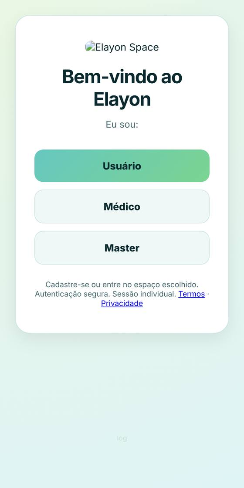
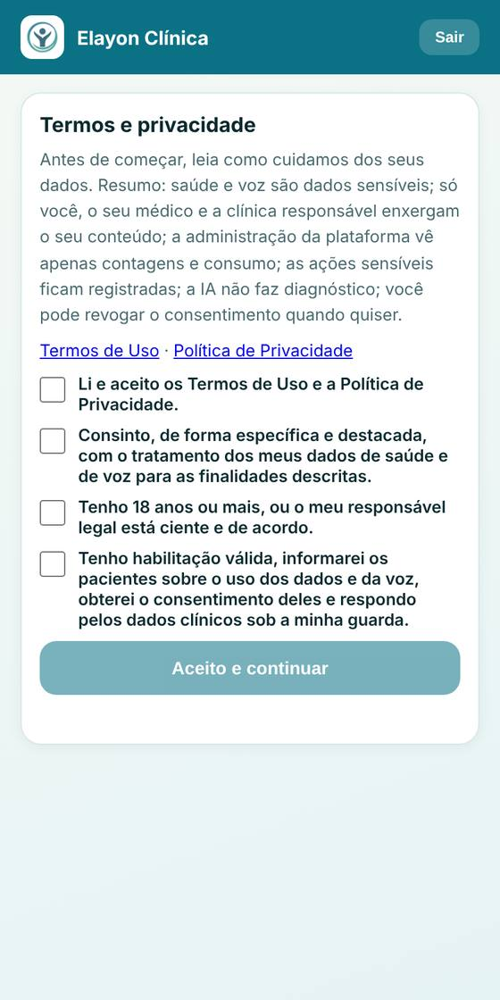
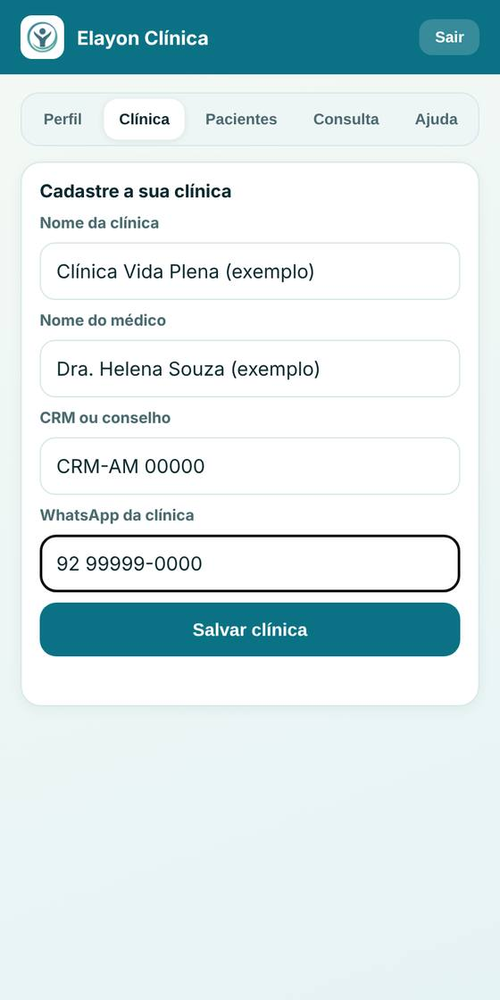
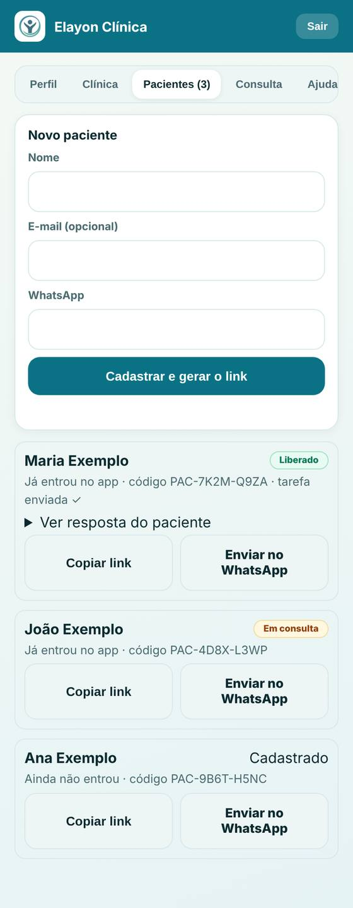
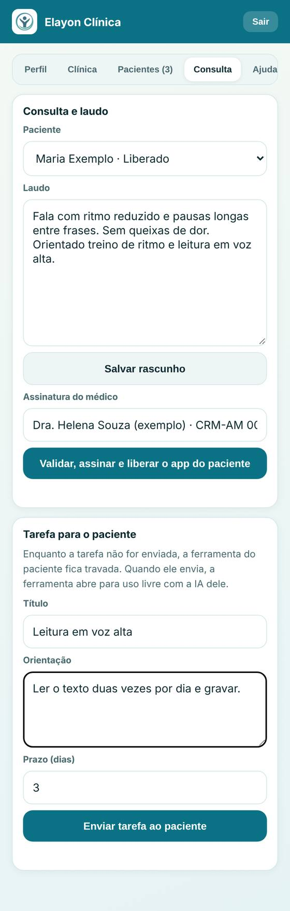
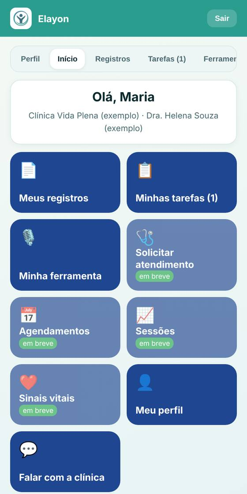
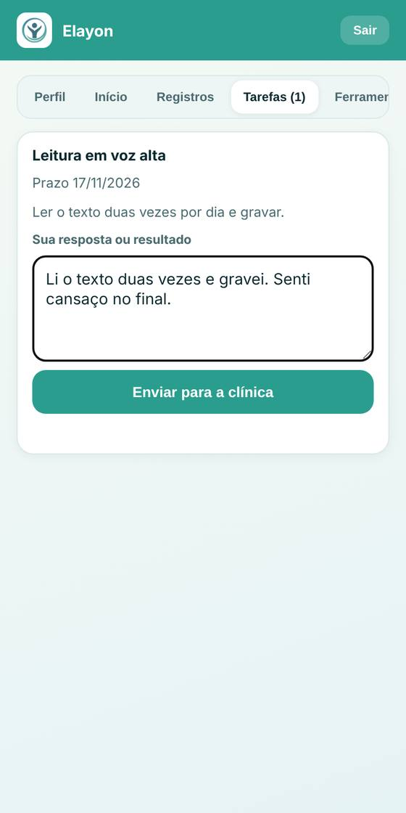
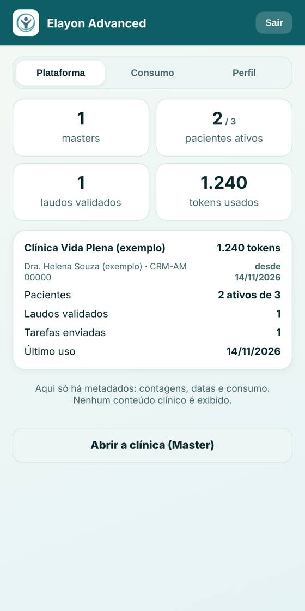
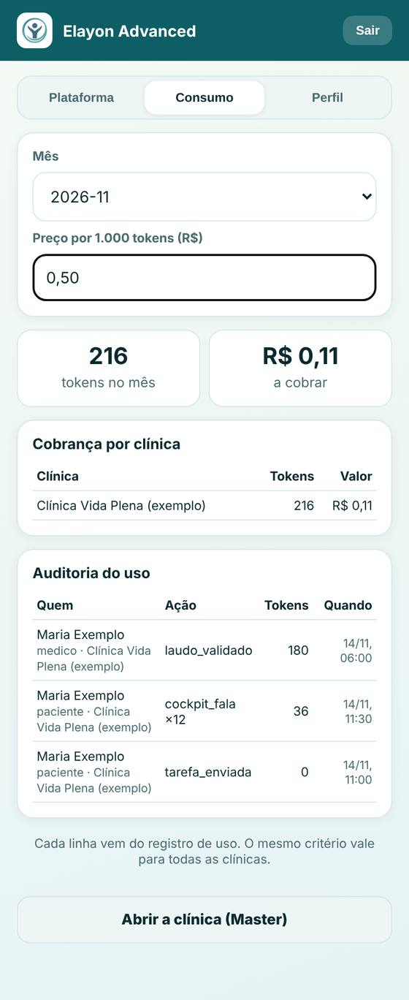
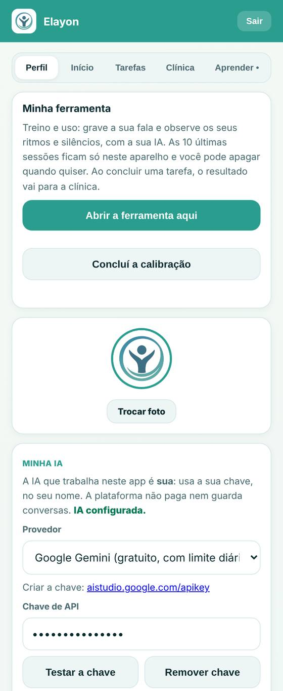

Passo a passo preenchido, do cadastro ao laudo e à ferramenta liberada. Todos os nomes e dados das telas são de exemplo.
Abra o link do Elayon, escolha Eu sou: Master e cadastre com e-mail e senha. Todos entram pela mesma porta; o papel define o que você vê.
Antes de usar, leia e marque os termos e a privacidade. Sem aceite, nada abre. O aceite fica registrado com versão e data.

Informe nome da clínica, responsável, registro profissional e WhatsApp. (Dados de exemplo na tela.)
Depois de salvar, a clínica gera o link para os pacientes.
Copie o link ou envie por WhatsApp. O paciente se cadastra, pede consulta e aparece aqui.
Abra o paciente para ver ficha, histórico e o prontuário.
Na consulta: gráficos, laudo e tarefas juntos.
Escreva o laudo, defina as tarefas e exercícios com prazo e envie. Laudo e tarefas viajam no mesmo envio.
O paciente entra pelo link da clínica e vê o menu inicial.
Cadastro, pedido de consulta e acompanhamento ficam no mesmo lugar.
Registros: o paciente acompanha o que já foi feito.
Medidas e transcrições chegam ao servidor; o áudio fica no aparelho.Tarefa do laudo: a ferramenta libera quando as tarefas são enviadas.
Cumpridas as tarefas, o paciente usa a ferramenta livremente com a sua própria IA.
O Advanced vê apenas metadados: quantos masters, clínicas e usos. Nunca o conteúdo clínico.
Transparência e imparcialidade: a gestão não lê o que é do paciente.
Consumo: cada uso de IA fica auditado.
É a base da cobrança correta e da prestação de contas.
Em Perfil, cole a chave da sua IA e salve. A caixa mostra o nome do modelo e a chave mascarada.
A IA é sua: você escolhe o provedor e a plataforma só intermedia o uso.